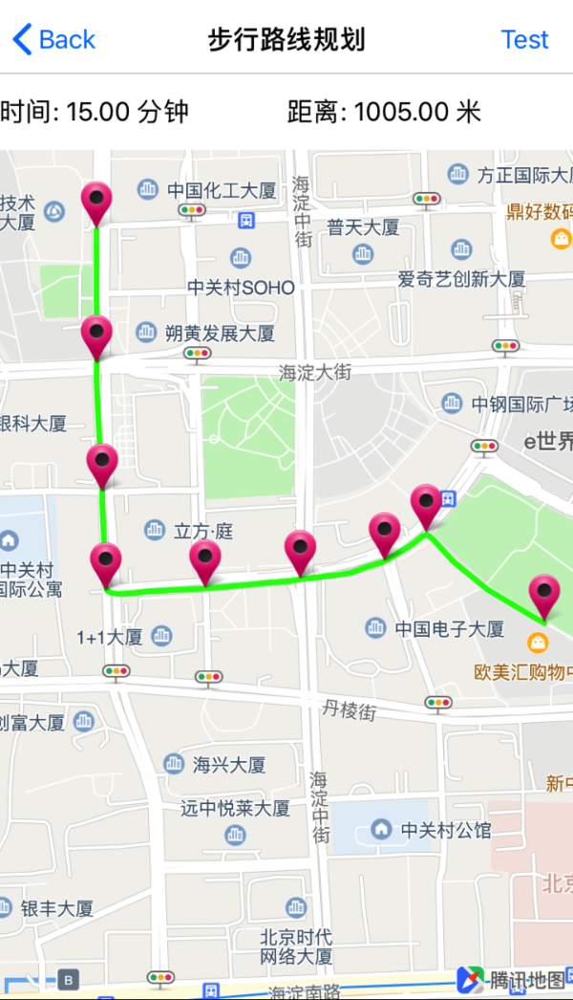

步行路线规划
引入头文件
#import <QMapKit/QMSSearchKit.h>
在AppDelegate.m 中设置已勾选WebServiceAPI的Key:
#import <QMapKit/QMSSearchKit.h>
- (BOOL)application:(UIApplication *)application didFinishLaunchingWithOptions:(NSDictionary *)launchOptions {
self.window = [[UIWindow alloc] initWithFrame:[[UIScreen mainScreen] bounds]];
// Configure API Key.
[QMapServices sharedServices].APIKey = @"您的APIKey";
// 如需检索功能，请设置检索的API Key
[[QMSSearchServices sharedServices] setApiKey:@"您的APIKey"];
}
注：请用户确认API Key已勾选WebServiceAPI选项，具体设置请参考设置
定义QMSSearcherAPI
定义主搜索对象 QMSSearcherAPI，并继承搜索协议 <QMSSearchDelegate>
构造QMSSearcherAPI
构造主搜索对象 QMSSearcherAPI，并设置代理
self.mySearcher = [[QMSSearcher alloc] initWithDelegate:self];
设置步行路线规划参数
设置 QMSWalkingRouteSearchOption 参数，其中 from 和 to 是必填字段。
QMSWalkingRouteSearchOption *walkingOpt = [[QMSWalkingRouteSearchOption alloc] init];
[walkingOpt setFrom:@"39.983906,116.307999"];
[walkingOpt setTo:@"39.979381,116.314128"];
- NSString *from，起点坐标 格式：from=lat<纬度>,lng<经度>
- NSString *to，终点坐标 格式：to=lat<纬度>,lng<经度>
发起步行路线检索
调用QMSSearcherAPI中的 searchWithWalkingRouteSearchOption: 发起步行路线检索
[self.mySearcher searchWithWalkingRouteSearchOption:walkingOpt];
在回调中处理搜索数据
当检索成功后，会调用到 searchWithWalkingRouteSearchOption: didReceiveResult: 回调函数，通过解析 QMSWalkingRouteSearchResult 数据把所需的结果绘制到地图上。
- (void)searchWithWalkingRouteSearchOption:(QMSWalkingRouteSearchOption *) walkingRouteSearchOption didRecevieResult:(QMSWalkingRouteSearchResult *) walkingRouteSearchResult
{
self.walkingRouteResult = walkingRouteSearchResult;
NSLog(@"Result: %@", self.walkingRouteResult);
}
QMSWalkingRouteSearchResult类属性说明：
- NSArray *routes：路径规划方案数组, 元素类型为QMSRoutePlan
获取routes元素的方式请参考demo
QMSRoutePlan类（路径规划的路线方案）说明：
| 属性 | 说明 |
|---|---|
| NSString *mode | 方案交通方式 |
| CGFloat distance | 方案整体距离 单位:米 |
| CGFloat duration | 方案估算时间 单位:分钟 四舍五入 |
| NSString *direction | 方案整体方向描述 |
| NSArray *polyline | 方案路线坐标点串, 导航方案经过的点, 每个step中会根据索引取得自己所对应的路段,类型为encode的CLLocationCoordinate2D。具体获取方式可参考demo |
| NSArray *steps | 标记如何通过一个路段的信息，类型为QMSRouteStep |
QMSRouteStep类的详细属性请参考 QMSSearchResult.h文件。
QMSRouteStep中一重要属性需说明：
- NSArray *polyline_idx：阶段路线坐标点串在方案路线坐标点串的位置，从经纬度数组中 根据索引查询这一段路的途经点。在WebService原始接口做了除2处理, 数据类型为NSNumber。polyline_idx[0]:起点索引，polyline_idx[1]:终点索引。
获取到的起点索引和终点索引代表着 QMSRoutePlan类中的 NSArray *polyline 相应元素索引的坐标点串值。
具体的使用方式请参考demo
效果示例图
QMSWalkingRouteSearchOption *walkingOpt = [[QMSWalkingRouteSearchOption alloc] init];
[walkingOpt setFrom:@"39.983906,116.307999"];
[walkingOpt setTo:@"39.979381,116.314128"];
[self.mySearcher searchWithWalkingRouteSearchOption:walkingOpt];
（数据解析请参考demo）
错误信息回调
当检索失败时，回调函数 searchWithSearchOption: didFailWithError: 会返回对应的错误信息
- (void)searchWithSearchOption:(QMSSearchOption *)searchOption didFailWithError:(NSError *)error
{
NSLog(@"%@",error);
}

更详细设置请参考demo